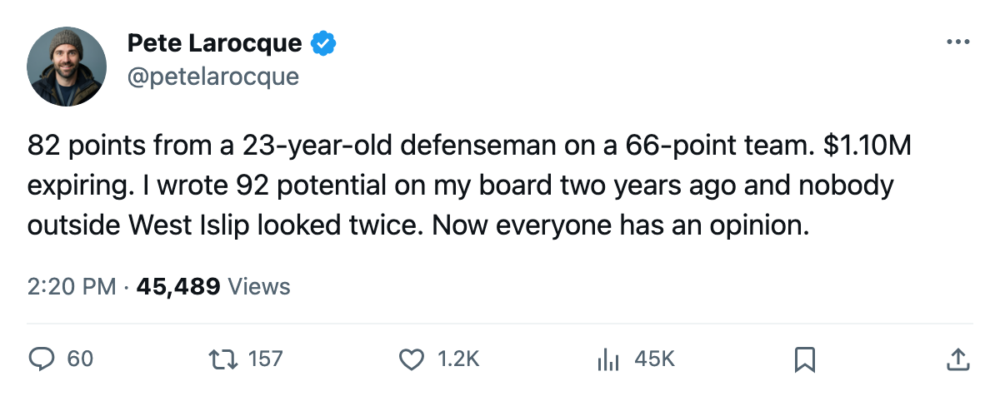
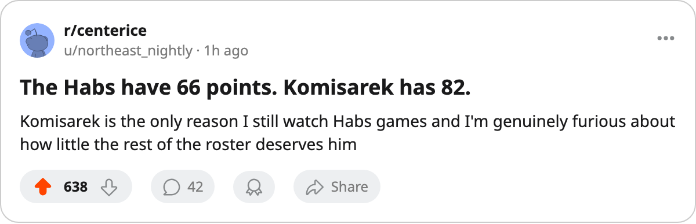

The 7th Pick Has 82 Points. His Team Has 66.
Mike Komisarek went from 3 points in 24 games to the most productive defenseman under 24 in the league, on a roster that lost 46 games.
 Pete LarocqueScouting editor · The Prospect File
Pete LarocqueScouting editor · The Prospect File
The piece
Mike Komisarek81 scored 3 points in 24 games last season. This season he has 82 in 82, and the  Montreal Canadiens Canadiens have 66 standings points.
Montreal Canadiens Canadiens have 66 standings points.
That gap, the man outscoring his club, is the kind of thing that used to define a draft class before you could look at the Development Index and see a defenseman at +6 while his team sits on a 21-46-6 record. Komisarek's base grade in the Book is 77. The Index has him 6 above that. His overall reads 82, and his potential sits at 92.
A 23-year-old defenseman went from 11.8 minutes a night and 3 points to 30.4 minutes a night and 82 points. No other defenseman under 24 is within 46 points of him. Dennis Seidenberg78 at 36 in Philadelphia is next, then  Rostislav Klesla87 with 30 in Toronto.
Rostislav Klesla87 with 30 in Toronto.
What the grades say
The Bureau's individual marks on Komisarek are not subtle: 92 checking, 89 speed, 88 aggression, 88 puck handling, 87 shot power, 85 passing. Those six attributes read like a top-pairing defenseman who drives play through possession and physicality. The weaknesses are in the areas a coach manages: 51 fighting, 52 slapshot, 55 breakouts. None of those keep a man from logging 30.4 minutes against top opposition. None of those keep a man from 67 assists.
He plays in Montreal, a team that scored 238 goals across 82 games and gave up 295. The roster around him is  Jose Theodore87 at 91 overall and
Jose Theodore87 at 91 overall and  Dwayne Roloson82 at 86 in goal,
Dwayne Roloson82 at 86 in goal,  Richard Zednik81 at 85 on the wing, and nobody else on the depth chart above 81 until
Richard Zednik81 at 85 on the wing, and nobody else on the depth chart above 81 until  Andrei Markov75. Komisarek's 67 assists did not come from linemates finishing chances created by others. They came from a defenseman with 85 passing putting pucks where other defensemen could not.
Andrei Markov75. Komisarek's 67 assists did not come from linemates finishing chances created by others. They came from a defenseman with 85 passing putting pucks where other defensemen could not.
The contract problem
He is on $1.10M with 1 year left. The 7th overall selection from the 2001 draft is about to be a restricted free agent, and the team that drafted him has 66 standings points and 21 wins. What does a club do with that? You do not trade him at 66 points because the asking price is astronomical and your rebuild loses its centerpiece. You do not extend him at $1.10M because no one extends a 23-year-old at that number after 82 points.
The last time I saw a man at 23 playing this way on a team this bad was Komisarek's own draft year, and nobody had a comparable jump at that age. He went from a bottom-pairing rookie on 11.8 minutes to the best young defenseman in the league on 30.4 minutes. The Book had him at 77 as a base. The Index corrected that.
The potential number is 92. That is a Hall of Fame ceiling, the kind the Bureau reserves for a handful of men on the whole under-25 board. Gaborik has 90. Kovalchuk has 85. Klesla has 97 and plays 14.8 minutes in Toronto's deep lineup. Komisarek has 92 and plays 30.4 because Montreal has nobody else.
If Montreal makes a decision on his contract this summer, they are deciding whether to pay a 23-year-old defenseman who scored 46 more points than the next-best man his age on the cheapest deal left on the roster. If they do not, they are betting that 82 points from a 23-year-old on a 66-point team was the peak, not the baseline.

